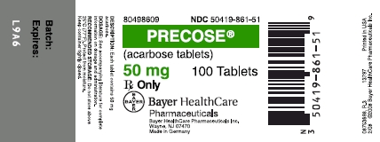

DIABETES
Equipo, medicamentos y material
- Glucosa, Colesterol y Triglicéridos
- Glicemia
- Hemoglobina Total
- Hemoglobina Glicosilada
- Perfil Lipídico
- Microalbuminuria
- Lactato
- Báscula multifunción
- Medicamentos y material médico
Glucosa, Colesterol y Triglicéridos
Pasteur Healthcare
Fabricante: BSI
Origen: Italia


Descripción
¿Por qué usar la prueba?
Rapidez en información de diagnóstico (POCT)
Nivel de Glucosa, colesterol y triglicéridos 30 segundos.
Monitoreo oportuno para conocer niveles.
Sistema de revisión periódica, prevención y control.
Glicemia
OG Care®
Fabricante: BSI
Origen: Italia


Descripción
¿Por qué usar la prueba?
Rapidez en información de diagnóstico (POCT)
Nivel de Glucosa presente en la sangre en 5 segundos.
Monitoreo oportuno para conocer niveles.
Sistema de revisión periódica, prevención y control.
Hemoglobina Total
Hemopoint H2
Fabricante: Stanbio Lab. EKF Diagnostics
Origen: Alemania
Descripción
¿Por qué usar la prueba?
Rapidez en información de diagnóstico (POCT)
Nivel de Hemoglobina Total en la sangre en 60 segundos.
Monitoreo oportuno para conocer niveles.
Sistema de revisión periódica, prevención y control.
Hemoglobina Glucosilada (HbA1c)
Analizador Cobas b 101 Roche
Descripción
¿Por qué usar la prueba?
Rapidez en información de diagnóstico (POCT)
Conocer el nivel de concentración de HbA1c
Media de valores de glucemia de los últimos 3 meses.
Sistema de revisión periódica, prevención y control.
Perfil Lipídico
Analizador y Tiras reactivas LUX (BSI)

Descripción
¿Por qué usar la prueba?
Rapidez en información de diagnóstico (POCT)
Nivel de Hemoglobina y Glucosa en 5 segundos, Perfil Lipídico en 3 minutos.
Monitoreo oportuno mensual para control de niveles.
Sistema de revisión periódica, prevención y control.
Microalbuminuria
Analizador de Orina y Tiras Reactivas Uri Tex (CORMAY)


Descripción
¿Por qué usar la prueba?
Rapidez en información de diagnóstico (POCT)
Nivel de Microalbuminuria e Hipercalciuria en 3 segundos.
Monitoreo oportuno para conocer niveles.
Sistema de revisión periódica, prevención y control.
Lactato
Lactate Scout
Fabricante: EKF
Origen: Alemania
Descripción
¿Por qué usar la prueba?
Rapidez en información de diagnóstico (POCT)
Nivel de Lactato en 10 segundos
Monitoreo oportuno para conocer niveles.
Sistema de revisión periódica, prevención y control.
Báscula Multifunción
CardioPrime Touch (DAVI&CIA)

Descripción
¿Por qué usar la prueba?
Mide Presión Arterial, Peso, Talla, IMC, Grasa Corporal, Tasa Metabólica Basal, Composición Corporal, Riesgo Cardiaco y Presión Media.
Monitoreo oportuno y de rutina.
Sistema de revisión periódica, prevención y control.
Medicamentos y material médico
Medicamentos Diabetes
